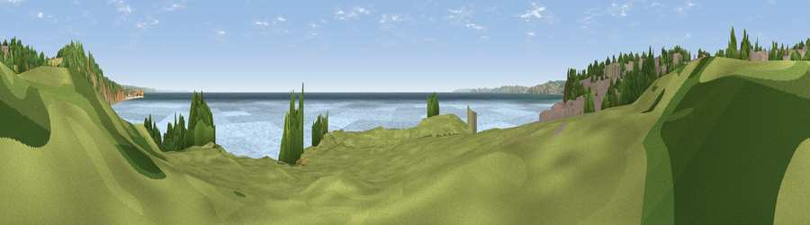

Viewpoint near Knowle
#13145 in England · top 24% of its area beats it · near KnowleWhere it is
The exact computed spot (SY 03825 80025). Click the marker for map links.
The view, rendered

A 360° render of this exact spot computed from the terrain model, tree cover and land cover — summer colours, afternoon light, calibrated against photographs of famous viewpoints. Real trees, hedges and buildings will differ in detail.
The panorama
Grey silhouette: terrain skyline in each direction (720 bearings, Earth curvature and refraction included). Dashed green: skyline with trees (+15 m) and buildings (+8 m) as obstacles. Blue strip: how far the ground is visible on each bearing.
Where the view opens
Wedge length = distance to the farthest visible ground on that bearing (vegetation-aware). Rings at 10, 25 and 50 km.
What fills the view
46% water · 21% grassland · 18% built-up · 12% woodland · 2% cropland · 2% bare ground
Angular shares of the visible panorama (visual magnitude), not map area. Landscape diversity 0.60 (0–1 Shannon).
Key numbers
More beautiful places nearby
The staircase of upgrades: each row has a higher view potential than everything closer. Driving times are estimates from straight-line distance, calibrated against real road routing — check an actual route before setting out.
| Place | Direction | Drive | Score |
|---|---|---|---|
| Viewpoint near Knowle | N · 1 km | ~2 min | 60.9 |
| Viewpoint near Exmouth | WSW · 1 km | ~3 min | 61.6 |
| Viewpoint near Knowle | NNE · 1 km | ~4 min | 81.9 |
| High Peak | NE · 9 km | ~17 min | 85.3 |
| Golden Cap | ENE · 39 km | ~58 min | 88.7 |
| The Knoll | E · 50 km | ~71 min | 91.0 |
50.61198, -3.36065 · source: screening · position refined by local search. Computed location — check access rights before visiting.